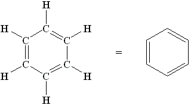

I've long been intrigued at the prospect of doing useful cognitive work when asleep or while dreaming, both in the sense of getting normal waking-self cognition out of otherwise unused time and for performing tasks that you couldn't have managed while awake. Here's a collection of anecdotes around the subject I've found; note the very strong reporting bias towards positive examples, though I've included a few cases that discuss negative results or limitations.
Mathematics
MathOverflow:
Have you solved problems in your sleep? Notable for including more frank discussion of limitations than many places, and sampling from a relatively small space (e.g. the top-voted answer is in fact one of the most prolific commenters on the site, rather than the single responder out of a thousand candidates who happened to have a positive anecdote.)
I've posted the examples I know of in
a comment on the above thread, but I'll also copy them below. Most of these originate from
this essay of
Gwern's.
Stanislaw Ulam, as quoted in
Turing's Cathedral:
Once in my life I had a mathematical dream which proved correct. I was twenty years old. I thought, my God, this is wonderful, I won’t have to work, it will all come in dreams! But it never happened again.
J Thomas:
Once after I had spent several days trying to prove a topology theorem, I dreamed about it and woke up with a counterexample. In the dream it just constructed itself, and I could see it. I didn’t have a fever then, though. Later one of my teachers, an old Polish woman, explained her experience. She kept a notebook by her bed so she could write down any insights she got in her sleep. She woke up in the night with a wonderful proof, and wrote it down, and in the morning when she looked at it it was all garbage. “You cannot do math in your sleep. You will have to work.”
Richard Guy:
Guy: If I do any mathematics at all I think I do it in my sleep.
MP: Do you think a lot of mathematicians work that way?
Guy: I do. Yes. The human brain is a remarkable thing, and we are a long way from understanding how it works. For most mathematical problems, immediate thought and pencil and paper—the usual things one associates with solving mathematical problems—are just totally inadequate. You need to understand the problem, make a few symbols on paper and look at them. Most of us, as opposed to Erdős who would probably give an answer to a problem almost immediately, would then probably have to go off to bed, and, if we’re lucky, when we wake up in the morning, we would already have some insight into the problem. On those rare occasions when I have such insight, I quite often don’t know that I have it, but when I come to work on the problem again, to put pencil to paper, somehow the ideas just seem to click together, and the thing goes through. It is clear to me that my brain must have gone on, in an almost combinatorial way, checking the cases or doing an enormous number of fairly trivial arithmetical computations. It seems to know the way to go. I first noticed this with chess endgames, which are indeed finite combinatorial problems. The first indication that I was interested in combinatorics—I didn’t know I had the interest, and I didn’t even know there was such a subject as combinatorics—was that I used to compose chess endgames. I would sit up late into the night trying to analyze a position. Eventually I would sink into slumber and wake up in the morning to realize that if I had only moved the pawns over one file the whole thing would have gone through clearly. My brain must have been checking over this finite but moderately large number of possibilities during the night. I think a lot of mathematicians must work that way.
MP: Have you talked to any other mathematicians about that?
Guy: No. But in Jacques Hadamard’s book on invention in the mathematical field, he quotes some examples there where it is fairly clear that people do that kind of thing. There was someone earlier this week who was talking about Jean-Paul Serre. He said that if you ask Serre a question he either gives you the answer immediately, or, if he hesitates, and you push him in any way, he will say, “How can I think about the question when I don’t know the answer?” I thought that was a lovely remark. At a much lower level, one should think, “What shape should the answer be?” Then your mind can start checking whether you’re right and how to find some logical sequence to get you where you want to go.
Jaques Hadamard, from
An Essay on the Psychology of Invention in the Mathematical Field:
Let us come to mathematicians. One of them, Maillet, started a first inquiry as to their methods of work. One famous question, in particular, was already raised by him that of the “mathematical dream”, it having been suggested often that the solution of problems that have defied investigation may appear in dreams. Though not asserting the absolute non-existence of “mathematical dreams”, Maillet’s inquiry shows that they cannot be considered as having a serious significance. Only one remarkable observation is reported by the prominent American mathematician, Leonard Eugene Dickson, who can positively assert its accuracy... Except for that very curious case, most of the 69 correspondents who answered Maillet on that question never experienced any mathematical dream (I never did) or, in that line, dreamed of wholly absurd things, or were unable to state precisely the question they happened to dream of. 5 dreamed of quite naive arguments. There is one more positive answer; but it is difficult to take account of it, as its author remains anonymous.
From
Thomason and Trobaugh, 1990:
The first author must state that his coauthor and close friend, Tom
Trobaugh, quite intelligent, singularly original, and inordinately generous, killed himself consequent to endogenous depression. Ninety-four days
later, in my dream, Tom's simulacrum remarked, "The direct limit characterization of perfect complexes shows that they extend, just as one
extends a coherent sheaf." Awaking with a start, I knew this idea had
to be wrong, since some perfect complexes have a non-vanishing KQ obstruction to extension. I had worked on this problem for 3 years, and saw this approach to be hopeless. But Tom's simulacrum had been so
insistent, I knew he wouldn't let me sleep undisturbed until I had worked
out the argument and could point to the gap. This work quickly led to
the key results of this paper. To Tom, I could have explained why he
must be listed as a coauthor.
Other science
A famous example is that of August Kekule's claim to have thought up the chemical structure of Benzene (shown below) by considering a snake biting its own tail:

However,
this NYT article is skeptical, pointing out the shaky historical evidence for the claim (Kekule's claim doesn't seem to be in the historical record until 30 years after the discovery, and it's not even clear he was the first to the discovery at all). I'm inclined to discount it pretty heavily.
George Church, via
this article, h/t
Stephen Malina
Church said “almost all” of his visionary ideas and scientific solutions have come while he was either asleep or quasi-asleep, sometimes dreaming, at the beginning or end of a narcoleptic nap. Such as? The breakthrough during graduate school that ushered in “next gen” genome sequencing, a fast and cheap way to “read” DNA. “Writing genomes,” or constructing them from off-the-shelf molecules as a way to improve on what nature came up with. Innovations in editing genomes.
These brainstorms, and more, occurred while he was “either daydreaming or night dreaming or in that period when I’m really refreshed right afterward.”
[...]
Or when his computer acts up, he takes it as a sign from the universe to shut down not only the machine but also himself, by sitting or lying down. “Then, when I wake up, I’ll have the solution to either the scientific problem or the computer problem,” he said.
Music/arts/creativity
Samuel Taylor Coleridge's poem
Kubla Khan was famously conceived in an opium-fueled dream, and is often subtitled
A Vision In A Dream:
In Xanadu did Kubla Khan
A stately pleasure-dome decree:
Where Alph, the sacred river, ran
Through caverns measureless to man
Down to a sunless sea.
Coleridge claims (19 years after the probable composition of the original poem) that while "in a sort of Reverie brought on by two grains of Opium taken to check a dysentry" after reading about Kubla Khan, the author
continued for about three hours in a profound sleep... during which time he had the most vivid confidence, that he could not have composed less than from two or three hundred lines... On Awaking he appeared to himself to have a distinct recollection of the whole, and taking his pen, ink, and paper, instantly and eagerly wrote down the lines that are here preserved.
At this moment he was unfortunately called out by a person on business from Porlock... and on his return to his room, found, to his no small surprise and mortification, that though he still retained some vague and dim recollection of the general purpose of the vision, yet, with the exception of some eight or ten scattered lines and images, all the rest had passed away.
As some supporting evidence for the dream composition hypothesis, Wikipedia
claims that "the poem is vastly different in style from other poems written by Coleridge".
Another famous example is the
Devil's Trill Sonata by Giuseppe Tartini:
One night, in the year 1713 I dreamed I had made a pact with the devil for my soul. Everything went as I wished: my new servant anticipated my every desire. Among other things, I gave him my violin to see if he could play. How great was my astonishment on hearing a sonata so wonderful and so beautiful, played with such great art and intelligence, as I had never even conceived in my boldest flights of fantasy. I felt enraptured, transported, enchanted: my breath failed me, and I awoke. I immediately grasped my violin in order to retain, in part at least, the impression of my dream. In vain! The music which I at this time composed is indeed the best that I ever wrote, and I still call it the "Devil's Trill", but the difference between it and that which so moved me is so great that I would have destroyed my instrument and have said farewell to music forever if it had been possible for me to live without the enjoyment it affords me.
General thoughts
One consistent pattern in these cases is that the claim of dream origins often follows the actual work produced in the dream by a period of years or decades. This is sort of weird, but seems like only weak evidence against plausibility, because it's still a pretty strange thing to do if the dream is a hoax.
I'd be really curious to hear about anyone who preregisters an intent to practice lucid dreaming and see what sorts of cognition they can elicit - would love pointers if anyone finds studies/blog posts/anecdotes!